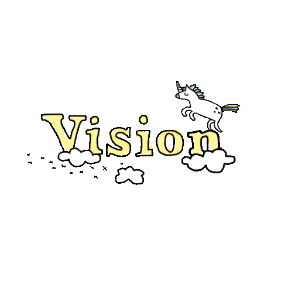
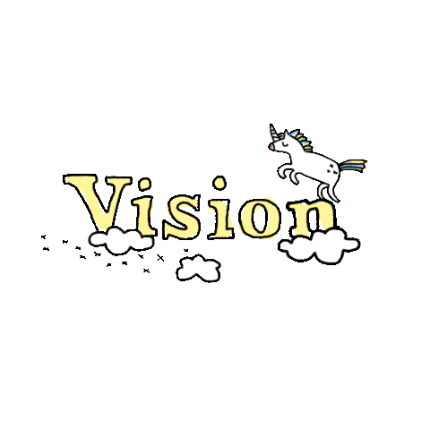

My real name is Jerico. I live at tondo manila, I was raise and born by my single mother and my eldest siblings. Since when I was a child until now I'm inlove with the cosmos, the mystery of the vast universe. I dream to explore the edge of universe, discover new planets, fly across different solar systems and discover new biodiversity. I also dream to become an inventor that will shapes the future.
Yes, I really love watching anime reading them on mangas, and also I love japanese people, on how can they be so discipline, generous and respectful. Until now I'm watching anime on my spare time, if I have no work to do like projects and coding, Anime is my resting place, the one that calms my mind. I also love japanese music because eventhough I can't understand the lyrics I can feel the emotions on it. I didn't say I don't like my own countryman. Also anime makes my mind more creative sometimes I design my projects base on an anime. I also dream to create games that is based on an Anime. Yep my Waifu is Asuna from Sword Art Online as you can see on the first picture. I didn't care on how people react on me, on tellingme how childish of me to watch some kiddy shows, I understand them, I'm just enjoying my life.

Oh, I forgot to talk about my life as a CS student. I'm currently studying in Technological University of the Philippines. Being a CS student is so stressful but fun, fun to create programs, from simple Hello World to something more productive. I'm more of a person who is so amaze when a simple thing that I learn. I appreciate things I understand things base on my intellectual capability and emotional approach I'm inlove with coding since when I was on highschool, at first I was inspired to create games because I really love plaing games, from simple pixel games to highly graphical games, from that it leads me to create countless of programminga projects like programming logics, mobile and computer games and applications which either unfinished or I forgot to continue.
 

My ultimate goal in life is to be happy, enjoy every seconds in my life, travel more with my family while being productive, have my own family and watch more animes. Talking about on my career,in the near future, I want to become software developer or even an engineer if I was lucky enough, build my own developer team, plan and build software projects, build an organization that will shapes the future. And Yes my childhood dream, I want to become an astronaut, or create my own space company or work from NASA. I'll study hard and work hard while I'm enjoying with my life.